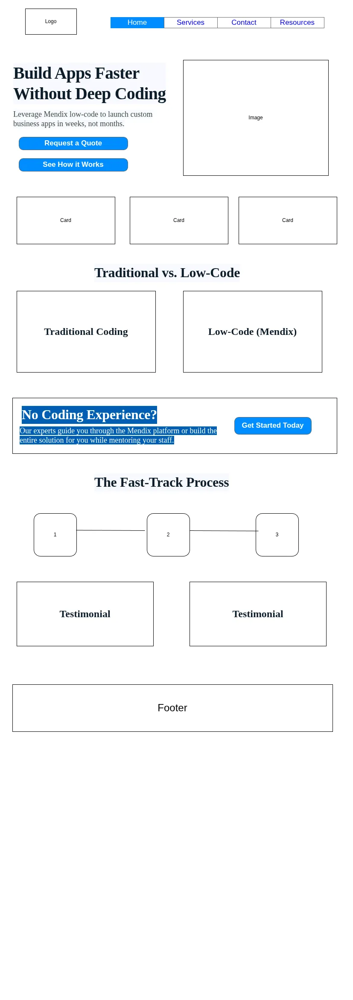

This name clearly communicates the focus on Mendix low‑code development while emphasizing speed and simplicity (“Express”). “Solutions” signals a service‑oriented offering for business challenges. Optional domain availability: mendix-express.com
The site serves as a dedicated hub for businesses seeking fast, cost‑effective application development using Mendix. It provides detailed information about low‑code development services, including project scoping, custom app building, deployment support, and maintenance. Visitors can explore case studies, request a free consultation, access technical resources (e.g., whitepapers, webinars), and submit project inquiries via online forms. The site also highlights Mendix’s advantages over traditional development, helping organizations understand how low‑code accelerates digital transformation.
“How much faster can Mendix deliver a custom business app compared to traditional coding?”
The site answers this through a side‑by‑side comparison chart, development timeline estimates, and real‑world case studies showing reduced time‑to‑market.
“Our team has no coding experience – can we still use Mendix to build and update apps ourselves?”
The site addresses this with a dedicated “For Non‑Technical Users” section, explaining Mendix’s visual drag‑and‑drop interface, offering demo videos, and listing training/support packages that empower business users to participate in development.
Primary Font Family: Open Sans
'Open Sans', 'Helvetica Neue', Helvetica, Arial, sans-serif
| Color role | Variable name | OKLCH value | Swatch preview |
|---|---|---|---|
| Base Surface 100 | --color-base-100 |
oklch(100% 0 0) |
#FFFFFF / pure white
|
| Base Surface 200 | --color-base-200 |
oklch(93% 0 0) |
light gray mist
|
| Base Surface 300 | --color-base-300 |
oklch(86% 0 0) |
cool light gray
|
| Base Content | --color-base-content |
oklch(35.519% 0.032 262.988) |
dark blue‑gray text
|
| Primary Main | --color-primary |
oklch(76.662% 0.135 153.45) |
mint / green accent
|
| Primary Content | --color-primary-content |
oklch(33.387% 0.04 162.24) |
deep forest text
|
| Secondary Main | --color-secondary |
oklch(61.302% 0.202 261.294) |
vibrant blue
|
| Secondary Content | --color-secondary-content |
oklch(100% 0 0) |
white text / icons
|
| Accent Main | --color-accent |
oklch(72.772% 0.149 33.2) |
warm amber/coral
|
| Accent Content | --color-accent-content |
oklch(0% 0 0) |
pure black text
|
| Neutral Main | --color-neutral |
oklch(35.519% 0.032 262.988) |
slate gray
|
| Neutral Content | --color-neutral-content |
oklch(98.462% 0.001 247.838) |
near‑white
|
| Info Action / Message | --color-info |
oklch(72.06% 0.191 231.6) |
sky blue
|
| Info Content | --color-info-content |
oklch(0% 0 0) |
black
|
| Success Positive | --color-success |
oklch(64.8% 0.15 160) |
emerald green
|
| Success Content | --color-success-content |
oklch(0% 0 0) |
black
|
| Warning Caution | --color-warning |
oklch(84.71% 0.199 83.87) |
golden yellow
|
| Warning Content | --color-warning-content |
oklch(0% 0 0) |
black
|
| Error Danger / Alert | --color-error |
oklch(71.76% 0.221 22.18) |
red / tomato
|
